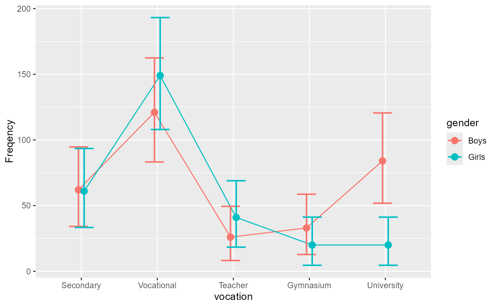

The data, taken from Light and Margolin (1971) , is an example where the educational aspiration of a large sample of N = 617 adolescents. The participants are classified by their gender (2 levels) and by their educational aspiration ( complete secondary school, complete vocational training, become college teacher, complete gymnasium, or complete university; 5 levels).
LightMargolin1971An object of class data.frame.
Light RJ, Margolin BH (1971). “An Analysis of Variance for Categorical Data.” Journal of the American Statistical Association, 66, 534–544. doi:10.1080/01621459.1971.10482297 .
library(ANOFA)
options(superb.feedback = 'none') # shut down 'warnings' and 'design' interpretation messages
# Lets run the analysis
L <- anofa( obsfreq ~ vocation * gender, LightMargolin1971)
summary(L)
#> G df Gcorrected pvalue etasq
#> Total 266.889 9 NA NA NA
#> vocation 215.016 4 214.668 0.0000 0.258428
#> gender 1.986 1 1.985 0.1589 0.003209
#> vocation:gender 49.887 4 49.555 0.0000 0.301949
# a quick plot
anofaPlot(L)

# Some simple effects.
e <- emFrequencies(L, ~ gender | vocation )
summary(e)
#> G df Gcorrected pvalue etasq
#> gender | Secondary 0.00813 1 0.008124 1.0000 0.000066
#> gender | Vocational 2.90893 1 2.906575 0.5736 0.010659
#> gender | Teacher 3.38684 1 3.384098 0.4957 0.048118
#> gender | Gymnasium 3.22145 1 3.218840 0.5219 0.057299
#> gender | University 42.34782 1 42.313530 0.0000 0.289364
# some contrasts:
e <- emFrequencies(L, ~ vocation | gender )
f <- contrastFrequencies(e, list(
"teacher college vs. gymnasium"=c( 0, 0, 1,-1, 0),
"vocational vs. university" = c( 0, 1, 0, 0,-1),
"another" = c( 0, 1,-1,-1,+1)/2,
"to exhaust the df" = c( 4,-1,-1,-1,-1)/4
)
)